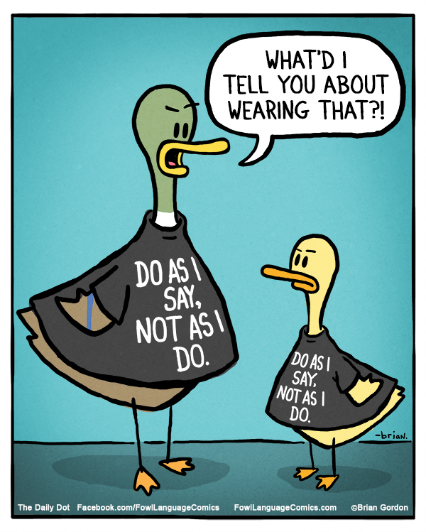

Quina de les seguents opcions defineix millor la falacia Ad Baculum?
TU TAMBÉ. Quan ens trobem en una situació on rebem un atac verbal, una reacció freqüent és respondre amb una acusació semblant cap a la persona que ens ha atacat, fent servir la tàctica del "tu també".
TU TAMBÉ. En lloc de refutar directament un argument, sovint optem per contraatacar qui ens ha atacat verbalment, retornant-li l'acusació.
TU TAMBÉ. Quan ens trobem sotmesos a un atac verbal, una resposta comuna és replicar amb una acusació similar cap a la persona que ens ha atacat, invertint així la situació.
TÚ TAMBÉ. En comptes de rebatre un argument, quan prèviament hem estat objecte d'un atac verbal, torneml'acusació a qui ens ha atacat.
Molt Be!
Has seleccionat la respota correcte!!
Tancar